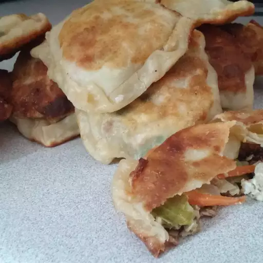

Gyoza

Description
Gyoza is a popular Japanese dish consisting of pan-fried dumplings filled with a savory mixture of ground meat (typically pork), vegetables like cabbage and garlic, and seasonings. The dumplings are wrapped in thin dough and then cooked until the bottoms are crispy and golden, while the tops remain soft and tender. Gyoza is often served with a dipping sauce made of soy sauce, vinegar, and chili oil. Originating from Chinese jiaozi, gyoza has become a staple in Japanese cuisine, enjoyed as an appetizer, side dish, or snack.
Ingredients
- Sesame oil: 1 tablespoon
- Chopped cabbage: 2 cups
- Chopped onion: 1/4 cup
- Chopped carrot: 1/4 cup
- Chopped garlic: 1 clove
- Ground pork: 1/2 pound
- Large egg: 1
- Wonton wrappers: 1 (10 ounce) package
- Vegetable oil: 1 tablespoon
- Water: 1/4 cup
- Soy sauce: 1/4 cup
- Rice vinegar: 2 tablespoons
Steps
- Heat sesame oil in a large skillet over medium-high heat. Add cabbage, onion, carrot, and garlic; cook and stir until cabbage is limp, 3 to 4 minutes. Add ground pork and egg; cook and stir until pork is browned and crumbly, 5 to 7 minutes.
- Make the gyoza: Place about 1 tablespoon pork mixture into the center of a wonton wrapper. Fold wrapper in half over filling, then seal the edges with moistened fingers. Repeat to make remaining gyoza.
- Heat vegetable oil in a large skillet over medium-high heat. Cook gyoza in the hot skillet until lightly browned, about 1 minute per side. Add water to the skillet, reduce the heat, cover, and steam gyoza until water is gone. Remove from the heat.
- Mix soy sauce and rice vinegar together in a small bowl. Serve as a dipping sauce with gyoza.